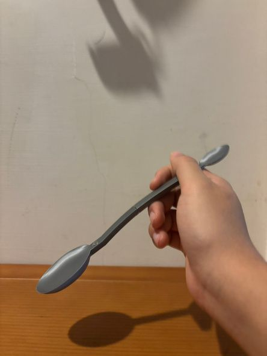
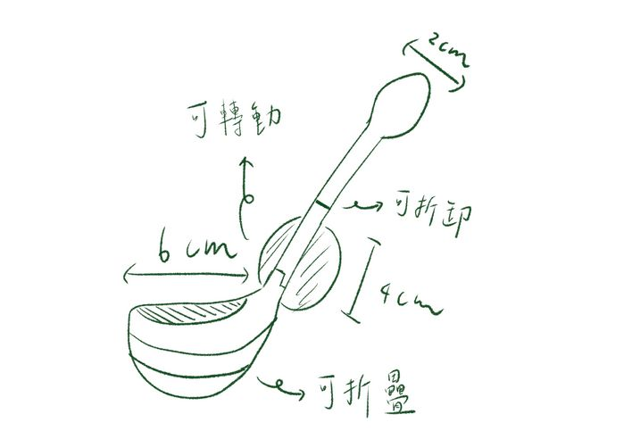
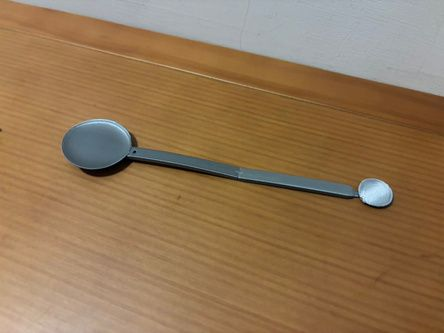
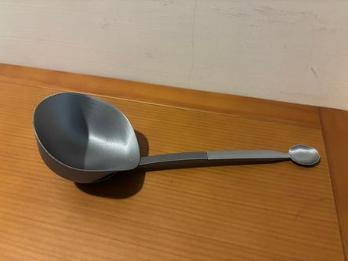

喝湯要深的湯匙，吃甜點適合小湯匙，但外食族通常只帶一支環保湯匙。我想做一支能換三種尺寸、又方便攜帶的湯匙。
期中的第一版參考折疊式安全帽與筆電轉軸，做成可折疊、可旋轉的結構。實際建模後發現需要直徑約 2mm 的轉軸，市面上買不到，螺紋也小到無法密合，於是改成磁吸。之後又印了三個版本，每一版都在修正上一版的問題。
- 期中
折疊與轉軸
參考安全帽滑軌與筆電轉軸。2mm 轉軸找不到、螺紋無法密合。
- 第一版
改為磁吸
湯匙太小、太短。重新量測一般湯匙尺寸後修改。
- 第二版
修正尺寸
磁鐵孔公差太小，放不進去；一顆磁鐵撐不住中湯匙的重量。
- 最終版
加厚、加量
換更厚、磁力更強的磁鐵並增加顆數，縮短手柄力矩。


